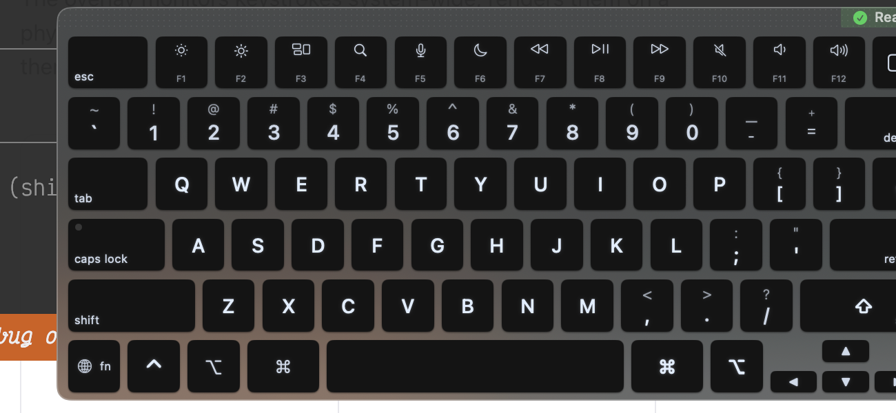

A floating window that shows what your keyboard is doing right now.
Overview
Capture. Visualize. Interact.
The overlay monitors keystrokes system-wide, renders them on a physical keyboard layout in real time, and lets you click keys to remap them.
Capture
CGEvent tap monitors all keystrokes system-wide
Visualize
SwiftUI renders key state on the selected physical layout
Interact
Click keys to remap them, open the inspector drawer for settings

The overlay floating above other windows, showing the MacBook US layout with the function row, Touch ID sensor, and status indicator.
The overlay is the centerpiece of the KeyPath experience. It floats above every app as a borderless, non-focusable window — you can see your keyboard layout and active remappings without switching away from what you're doing. When you press a key, it lights up instantly. When Kanata switches to a different layer (say, a navigation layer triggered by holding Caps Lock), the overlay updates to show that layer's bindings.
The inspector drawer slides out from the right edge and contains tabs for the key mapper, custom rules, keymap selector, layout picker, launcher configuration, and device settings. Clicking a key on the overlay selects it in the mapper, so you can remap any key with two clicks: click the key, pick the output.
Launcher mode is a special interaction: when the user activates a "launcher" layer via a hold key, the overlay brings itself to front (even if the app is hidden), shows available launch targets on each key, and dismisses itself after the action fires. This lets you launch apps, open URLs, or run scripts from any context without reaching for the mouse.
Architecture
The Complete Picture
Two input streams converge on the controller, which drives the SwiftUI overlay and its inspector panel.
Core invariant. The overlay is a passive observer. It never modifies Kanata config, never sends TCP commands (that's ConfigReloadCoordinator), and never starts or stops the Kanata service (that's ServiceLifecycleCoordinator). It only reads key events and layer state.
Files
Seven Files, Seven Responsibilities
The controller was originally a 1,360-line god object. We split it into one core class and six extensions, each in its own file, organized by responsibility.
Why extensions instead of separate classes? The controller manages a single NSWindow with shared state: the window reference, the viewModel, the UIState, and a dozen flags for visibility, suppression, and animation. Separate classes would mean either passing all that state around or creating an artificial protocol layer. Extensions in separate files give us the readability win (each file is one concern) without the coupling cost (they share instance state naturally).
All stored properties live in the core file. Swift doesn't allow extensions in separate files to add stored properties, so the core file declares everything and the extensions just add methods. This is the main reason the core is 753 lines rather than 400 — about 100 lines are property declarations that logically belong to the extensions but physically must live in the class body.
LiveKeyboardOverlayControllerCore
753 lines. Window lifecycle, visibility, frame persistence, NSWindowDelegate. Creates the NSWindow, manages show/hide animations, startup flow. The singleton entry point for the entire overlay system.
+LayerStateExtension
139 lines. Observes Kanata layer change notifications. Manages one-shot layer override state (for momentary layers that should stick briefly). Updates the viewModel's current layer name.
+LauncherSessionExtension
89 lines. Handles the "launcher layer" activation flow: brings the overlay to front when the launcher key is pressed (even if the app is hidden), then restores previous visibility after the action completes.
+KeyClickHandlingExtension
100 lines. Translates physical key clicks into mapper drawer selections. In launcher mode, dispatches launch actions directly. Posts notifications for the mapper drawer to update.
+AppSuppressionExtension
24 lines. Per-app overlay hiding. When a suppressed app (e.g., Figma) is frontmost, hides the overlay and restores it when leaving.
+ObserversExtension
218 lines. All notification observers: mapper tab opening, wizard visibility, accessibility test mode, health indicator state. Also handles window recreation when test mode changes.
+InspectorExtension
411 lines. Inspector panel open/close/animate/resize. Handles the drawer slide-in animation, content height observation, and keyboard aspect ratio changes.
Data Flow
Every Event, Traced
Six event types, each with a clear path through the system. No event requires more than two hops to reach its handler.
The overlay communicates almost entirely through NotificationCenter. This is intentional: the controller doesn't hold references to the Kanata event listener, the workspace observer, or the wizard — it just listens for notifications. This decoupling means the overlay can be tested by posting notifications directly, and it means the overlay module has no compile-time dependency on the runtime service layer.
Key press
CGEvent tap → ViewModel.keyStates → SwiftUI re-render
Five invariants that keep the overlay reliable and non-intrusive. Each rule exists because we learned the hard way what happens without it.
1
The overlay never becomes key window
OverlayWindow.canBecomeKey returns false. It must never steal keyboard focus from the user's active app.
2
Layer changes from Kanata are authoritative
One-shot overrides (from push-msg) are temporary; when Kanata reports "base", always honor it.
3
Visibility has three independent guards
userExplicitlyHidden (toggle), wizardHidden (auto), appSuppressed (per-app). They compose without clobbering each other.
4
Frame persistence survives inspector state
saveWindowFrame() always stores the collapsed (non-inspector) frame, so hide/show cycles don't accumulate width.
5
All stored properties live in the main class body
Swift extensions in separate files can't add stored properties. Methods move to extensions; state stays in core.
Rule 3 deserves extra attention. The overlay can be hidden for three independent reasons: the user toggled it off (userExplicitlyHidden), the wizard/settings opened automatically (overlayHiddenByWizard), or the frontmost app is on the suppression list (isAppSuppressed). Each reason tracks its own "was visible before" flag and restores independently. Without this separation, closing the wizard would unhide an overlay the user had intentionally dismissed — a subtle but maddening bug we hit early on.
The window itself is an OverlayWindow subclass that overrides canBecomeKey to return false. This is essential: if the overlay ever became the key window, every keystroke would go to it instead of the user's active app. The window is set to NSWindow.Level.floating so it stays above other windows, and it's borderless with a custom SwiftUI-rendered chrome (drag handle, close button, drawer toggle).
In accessibility test mode (toggled via a preference or env var), the overlay switches to a titled window style so automation tools like Peekaboo can discover it via the accessibility hierarchy. Since NSWindow.styleMask can't be changed after init, toggling test mode destroys and recreates the entire window.
Related
See Also
The overlay sits at the intersection of several other systems.
Runtime & Service Lifecycle → — The overlay only shows when Kanata is running. Health checks determine the overlay's status indicator.